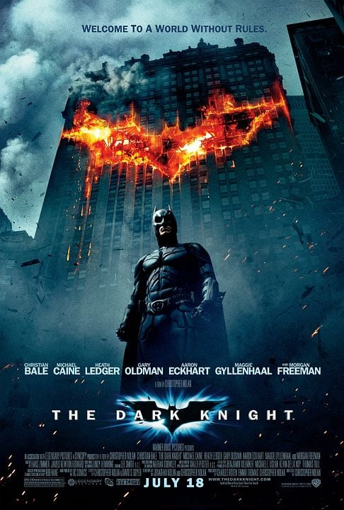

MEU GUIA DE RECOMENDAÇÕES
Bem-vindos ao meu site, pessoal! Sentem-se e peguem o bloquinho de anotações. :)
Filmes Favoritos ⬆
Como um grande fã de ficção científica e super-heróis, recomendo muito a trilogia do Batman: Cavaleiro das
Trevas.
Minha franquia favorita!
Batman Begins (2005)

Batman: O Cavaleiro das Trevas (2008)

Batman: O Cavaleiro das Trevas Ressurge (2012)

Veja os trailers resumidos da trilogia:
Assistir no YouTube
Por que assistir a Trilogia O Cavaleiro das Trevas?
- Trilha sonora épica: A trilha sonora lendária de Hans Zimmer dita o ritmo do filme. Ela te deixa tenso,
emocionado e faz o
coração acelerar nas cenas de ação.
- Os "brinquedos" do Batman: É muito legal ver o processo de desenvolvimento e teste de cada equipamento. O
carro, o traje e
as armas têm explicações lógicas, parece tecnologia militar de verdade.
- O clima da cidade: Gotham parece uma cidade real, suja e perigosa (lembrando uma Nova York antiga), o que
faz
você sentir que o perigo está ali na esquina, e não num mundo de fantasia.
Confira a sinopse completa dos filmes no IMDb:
Batman no IMDb
Meus Top 5 Jogos ⬆
Aos finais de semana, gosto de relaxar jogando competitivamente.

- Counter-Strike 2
- Grand Theft Auto San
Andreas
- The Legend of Zelda: Breath of the Wild
- Batman: Arkham
City
- Need For Speed Most Wanted (2005)
Tabela de Avaliação ⬆
Uma comparação rápida das notas que dou para as minhas obras preferidas.
| Categoria e Título |
Minha Nota (0-10) |
| Filmes |
Batman Begins (2005) |
9 |
| Batman: O Cavaleiro das Trevas (2008) |
10 |
| Batman: O Cavaleiro das Trevas Ressurge (2012) |
9.5 |
| Jogos |
Counter-Strike 2 |
10 |
| Grand Theft Auto San Andreas |
10 |
| The Legend of Zelda: Breath of the Wild |
10 |
| Batman: Arkham City |
10 |
| Need For Speed Most Wanted (2005) |
10 |
⬆ Voltar ao topo